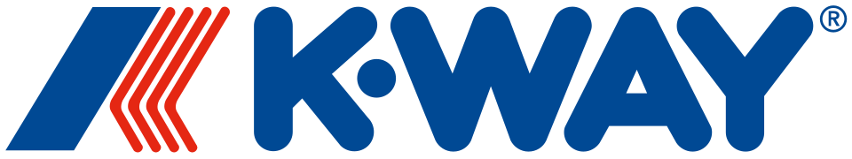

홈 > 브랜드 매거진 > 케이웨이
케이웨이
케이웨이(K-Way)는 1965년 프랑스에서 발명된 방수 윈드브레이커로 유명한 패션 브랜드이다.
산업 분야 패션·럭셔리 · 공개 등급 자료 기반 · 브랜드 평가 4.1 ★

한눈에 보는 브랜드
케이웨이는 접이식 방수 윈드브레이커로 알려진 아우터 브랜드로, 1965년 프랑스 북부 파드칼레 출신의 레옹클로드 뒤아멜이 창안했다. 코팅 나일론 재킷을 작은 허리 파우치에 접어 넣는 발상이 출발점이었다.
첫 전환점은 1966년 약 25만 벌 판매로 이름이 보통명사처럼 굳어진 것이고, 두 번째 전환점은 1990년대 공장 화재와 경영난 끝에 2004년 이탈리아 베이직넷 그룹에 인수되며 패션 브랜드로 재해석된 것이다. 1970년대에는 연 200만 벌 이상이 팔렸고, 현재 기업가치는 약 5억 유로 규모로 평가된다.
브랜드 관점
가장 중요한 차별점은 두 층위에 있다. 첫째 제품 차원에서, 케이웨이는 코팅 나일론 재킷을 자체 파우치에 접어 넣는 패커블 윈드브레이커라는 형식을 사실상 발명했고, 삼색 지퍼와 프랑스 국기에서 따온 로고가 그 형식의 시각 기호로 작동한다.
비를 피하려고 카페에 머물던 창업자가 가볍고 휴대 가능한 비옷을 떠올렸다는 기원이 곧 기능의 정체성으로 이어졌다. 둘째 사업 구조 차원에서, 모기업 베이직넷은 상표권을 보유하고 130개 이상 시장의 독립·직영 라이선시 망으로 생산과 유통을 위임하는 라이선스 모델을 쓴다.
이 구조는 자본 부담을 낮추고 로열티 수익을 키우는 전략으로, 2025년 사모펀드가 케이웨이 지분 약 40%를 약 1억9천만 유로에 인수하며 직접판매 채널 확대로 방향이 옮겨갔다. 한국 독자에게는 기능성 아우터가 라이프스타일·스트리트 영역으로 재포지셔닝되는 전형으로 읽힌다.
시작과 성장
1960년대 중반 유럽 의류 산업이 합성소재로 빠르게 재편되던 시기가 배경이다. 바지 제조업자 집안에서 자란 레옹클로드 뒤아멜은 비에 젖은 채 거리를 오가는 사람들을 보며, 1965년 파리 카페 드 라 페에서 가볍고 작게 접히는 비옷을 구상했다.
같은 해 벨기에 직물 회사가 그의 부친에게 코팅 나일론을 제안했고, 이 신소재를 의류에 응용하자는 부자간 논의가 제품으로 이어졌다. 처음에는 재킷을 '앙카'로 부르고 파우치를 분리했으나, 이듬해 광고대행사의 제안으로 미국적 어감의 '웨이'를 붙여 케이웨이로 개명한 것이 첫 전환점이다.
두 번째 전환점은 1966년 약 25만 벌 판매로 상표가 해당 의류 범주의 보통명사처럼 자리 잡은 것이며, 1970년대 연 200만 벌 이상으로 확장됐다. 이후 1990년대 화재와 경영난을 거쳐 2004년 베이직넷 인수로 재건됐다.
브랜드 아이덴티티
핵심 가치는 비와 바람을 막는 기능성과 휴대성을, 가볍고 경쾌한 색채 감각과 결합한 데 있다. 비주얼 아이덴티티의 중심은 프랑스 국기를 본뜬 삼색 지퍼와 가슴에 인쇄된 컬러 로고, 그리고 본체에 결합된 접이식 파우치다.
대표 라인 르 브레의 클로드 재킷은 이 요소를 집약한 상징 모델로 통한다. 타깃은 도시형 아웃도어와 스트리트 감성을 함께 추구하는 남녀·아동 전 연령으로 넓고, 브랜드 보이스는 실용성과 유쾌한 색감을 앞세우되 60년 헤리티지와 협업을 통해 동시대 패션 맥락에 자신을 위치시키는 톤이다.
제품과 서비스
취급 품목은 패커블 윈드브레이커와 레인웨어를 축으로 재킷·우비·바지·모자 등 아우터와 액세서리, 남성·여성·아동 라인 전반에 걸친다. 채널은 베이직넷의 라이선시 네트워크 기반 도소매에 직영 매장과 공식 온라인몰, 백화점·편집숍을 더한다.
한국에서는 공식 온라인 스토어와 주요 패션 플랫폼·리셀 채널을 통해 유통된다.
현재 상태
본사는 프랑스에 두며, 지배구조상 이탈리아 토리노 소재 베이직넷 그룹이 상표를 보유하고 주요 지분을 통제한다. 2025년 사모펀드가 약 40% 지분을 취득해 공동 성장 구도를 형성했고, 카파·수페르가·세바고 등이 같은 그룹의 자매 브랜드다.
현재 60주년을 지나 프리미엄 아우터 시장에서 직접판매와 국제 확장을 추진하는 상태다.
타임라인
정리된 연도형 이벤트가 없습니다.
BI/CI 변천사
함께 읽을 브랜드
 패션·럭셔리 · 매거진 완성코치
패션·럭셔리 · 매거진 완성코치코치는 실용적 가죽 제품을 일상적 럭셔리의 영역으로 끌어올린 브랜드다. 과시적 명품보다 접근 가능한 품질과 라이프스타일 이미지를 통해 오래 쓰는 가방의 감각을 브랜드...
 패션·럭셔리 · 편집 검수디젤
패션·럭셔리 · 편집 검수디젤디젤(Diesel)은 1978년 렌조 로소가 이탈리아 브레간체에서 설립한 데님 중심의 컨템포러리 패션 브랜드다. 도발적이고 실험적인 디자인으로 데님 헤리티지를 재해석...
 패션·럭셔리 · 자료 기반내셔널지오그래픽 어패럴
패션·럭셔리 · 자료 기반내셔널지오그래픽 어패럴내셔널지오그래픽 어패럴(National Geographic Apparel)은 한국 더네이처홀딩스가 내셔널지오그래픽 라이선스로 전개하는 라이프스타일 아웃도어 패션 브랜...
 패션·럭셔리 · 편집 검수자라
패션·럭셔리 · 편집 검수자라자라는 패션을 예측하기보다 시장의 반응을 빠르게 읽고 다시 매장으로 돌려보내는 브랜드다. 트렌드를 길게 기획하는 대신 고객 반응과 유통 속도를 무기로 삼아, 패션을...
 패션·럭셔리 · 편집 검수조르지오 아르마니
패션·럭셔리 · 편집 검수조르지오 아르마니조르지오 아르마니(Giorgio Armani)는 1975년 밀라노에서 설립된 이탈리아 럭셔리 패션 하우스이다.
 패션·럭셔리 · 자료 기반몽클레르
패션·럭셔리 · 자료 기반몽클레르몽클레르(Moncler)는 1952년 프랑스에서 설립돼 현재 이탈리아에 본사를 둔 럭셔리 다운재킷 브랜드이다.
 패션·럭셔리 · 자료 기반돌체앤가바나
패션·럭셔리 · 자료 기반돌체앤가바나돌체앤가바나(Dolce & Gabbana)는 1985년 도메니코 돌체와 스테파노 가바나가 설립한 이탈리아 럭셔리 패션 하우스이다.
 패션·럭셔리 · 자료 기반보테가 베네타
패션·럭셔리 · 자료 기반보테가 베네타보테가 베네타(Bottega Veneta)는 1966년 이탈리아 비첸차에서 설립된 럭셔리 가죽제품 브랜드이다.